GiftSense｜心意，醫觸即達
GiftSense — AI 醫療情境送禮推薦 APP
台灣首個結合 AI 與醫療知識的送禮推薦 APP，解決探病送禮常誤送不適合病患商品的問題。 擔任專題組長，統籌整體專案進度與組員分工，負責企劃書撰寫（ER Model、DFD、BMC、甘特圖）。
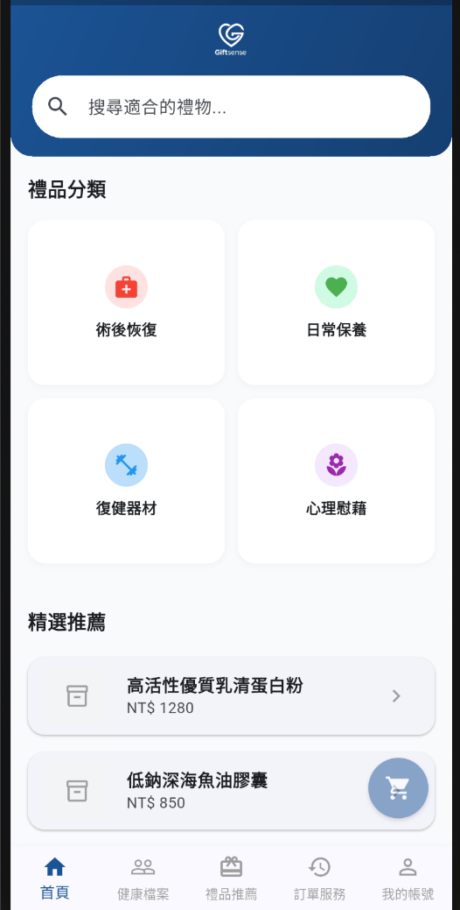
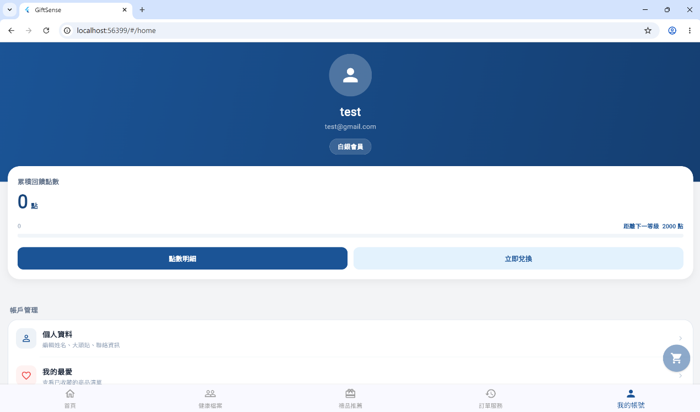
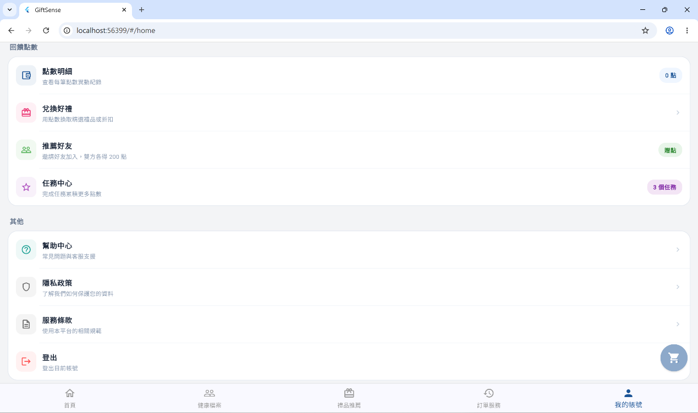
鐵道守護眼 Railway Sentinel
鐵道守護眼 — AI 影像辨識鐵道異常回報系統
一人身兼專案管理與主力開發：時程規劃、風險評估、資源分配、人力協調，到實際程式開發全部參與。 整合 GPT-4o Vision 影像辨識、即時地圖與台鐵官方 TDX API，讓民眾能即時回報並查看鐵道異常狀況。
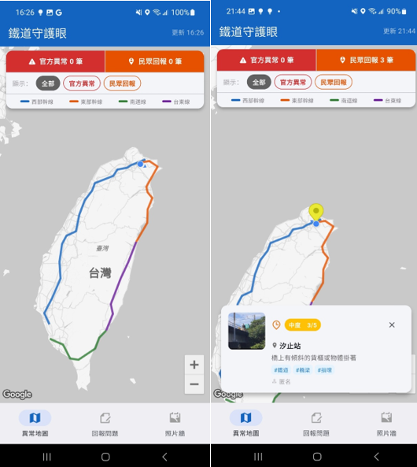
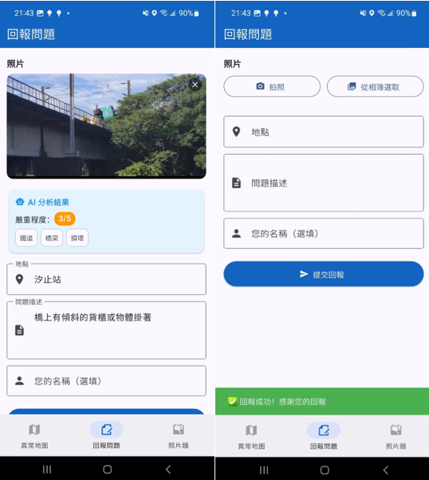

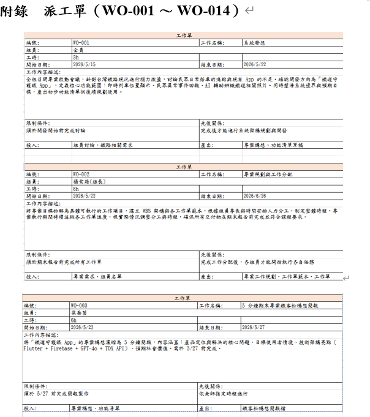
海事智醫鏈 MediLink-Sea
海事智醫鏈 — 衛星遠洋醫療解決方案
解決遠洋船員在低頻寬海上環境下無法即時取得可判讀醫療影像的問題，結合衛星通訊、Edge AI 與 IoT 生理量測。 參與需求分析（海事醫療現況、國際死因統計研究）、技術可行性評估（AI 影像壓縮、離線 AI 檢傷）到概念性驗證（POC 測試，含離線 AI 推論實測）的完整流程。
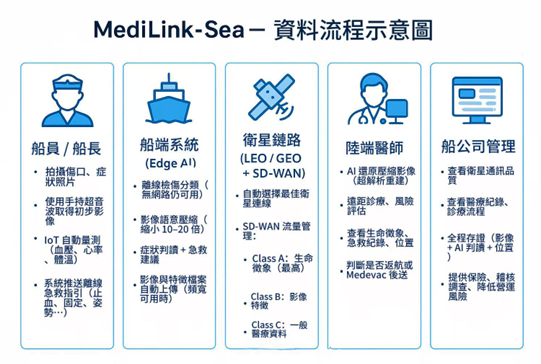

新聚點 — AI 智慧新住民服務平台
新聚點 — AI 智慧新住民服務平台
服務新住民與外籍移工的多語言資訊平台，整合 LINE Bot、語音辨識與地圖找資源功能， 支援中、越、印尼、菲律賓、泰語五種語言介面。
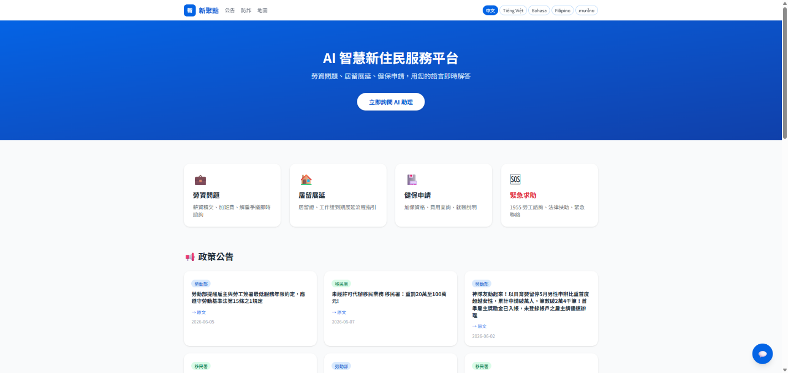
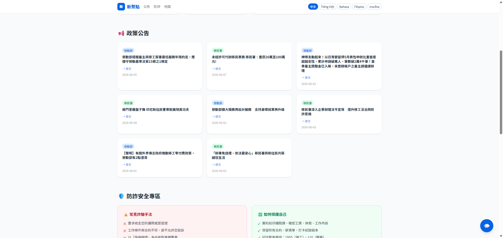

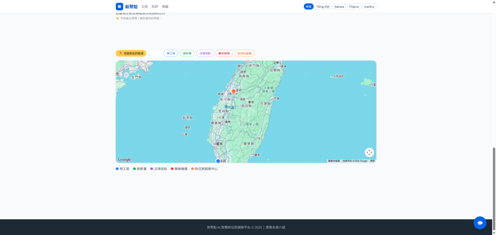


CakeShop — 手作蛋糕電子商店
CakeShop — 手作蛋糕電子商店
完整電商網站：商品搜尋、購物車、結帳扣庫存、留言板、後台管理、SQL Injection 防護等七項基本功能 與五項延伸功能；資料庫加強版另外設計 Trigger 與預存程序等進階功能。
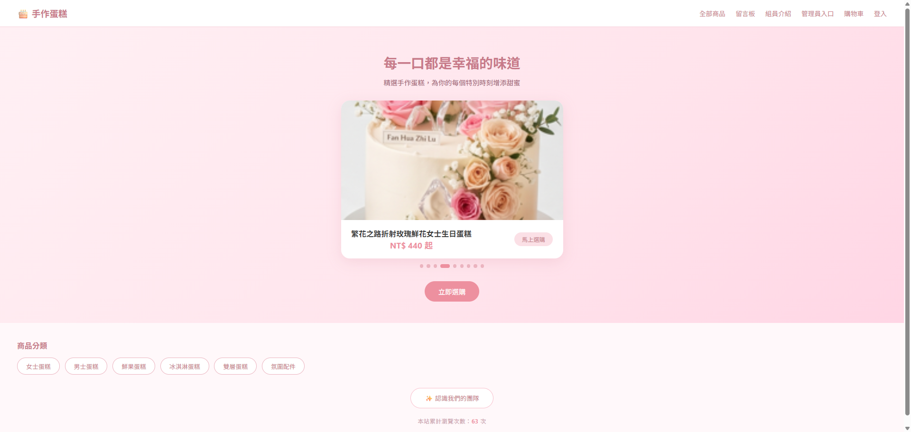
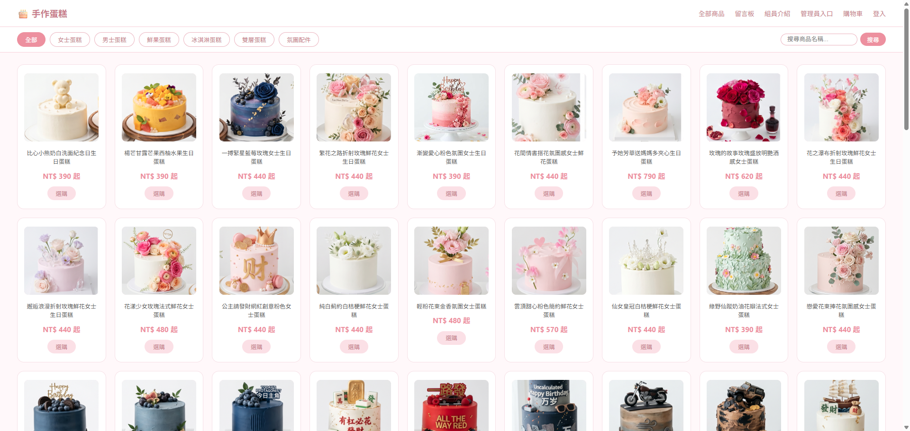
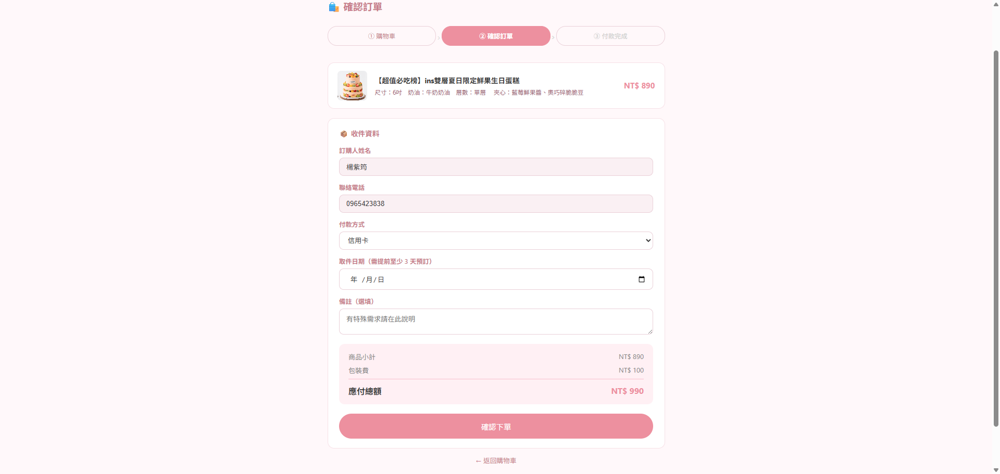
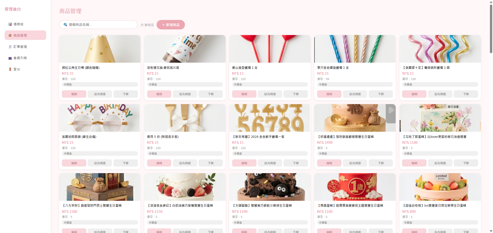

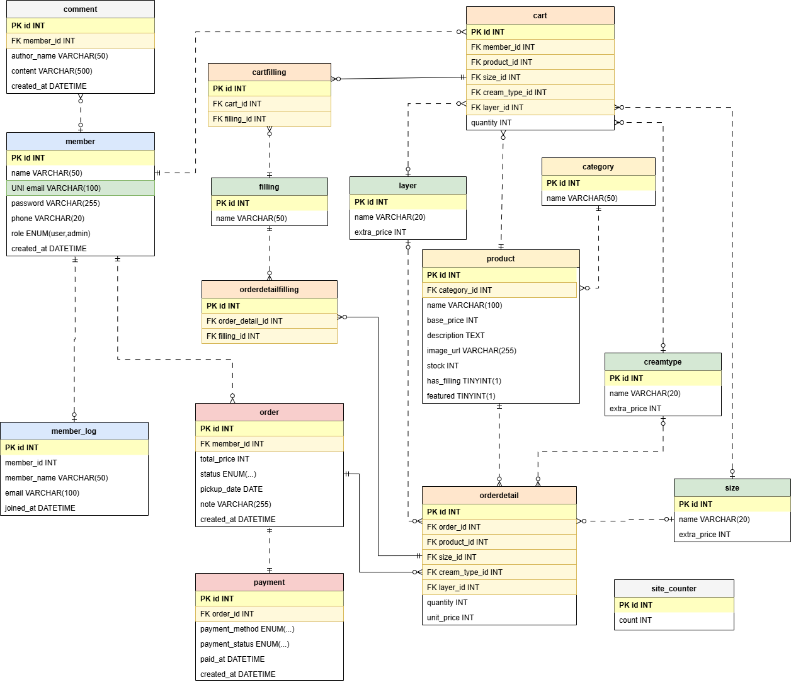